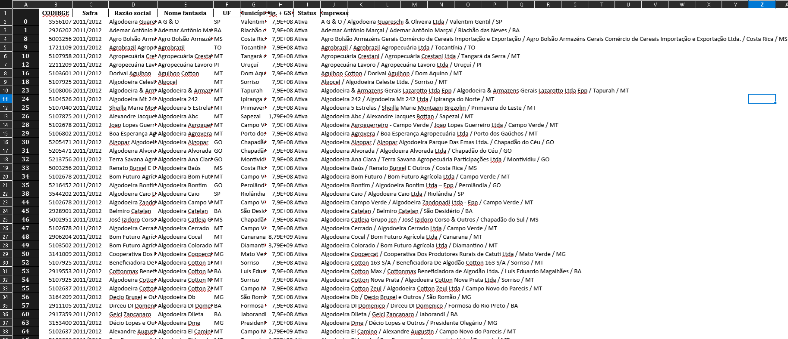

← Projetos
Extrair dados da ABRAPA
Link do Projeto: Acesse aqui
Não temos bases de dados de beneficiadoras de algodão com coordenadas georreferenciadas. O projeto busca no google as beneficiadoras ativas e puxa a latitude e longitude do link de localização da empresa.
